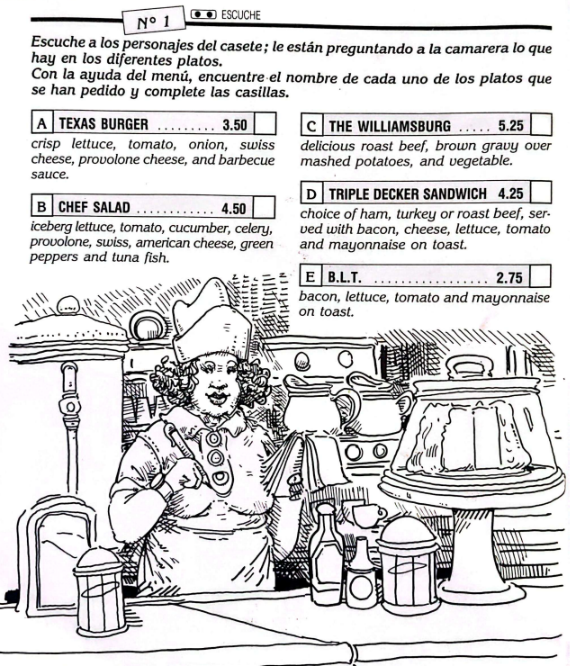
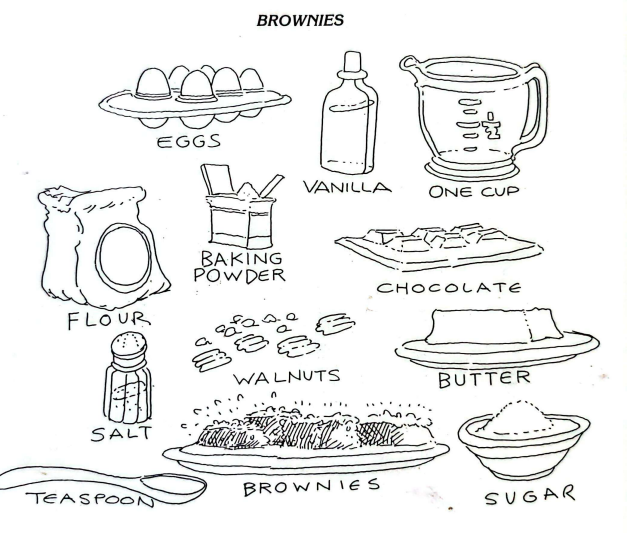

Sistema de recompensas
Tu avatar actual
Unidad 02 · Entrega 03
En el restaurante
Jane y Tom cenan en un restaurante mexicano en Los Angeles. Aprenderás a pedir mesa, solicitar recomendaciones, ordenar comida y bebidas, expresar opiniones sobre los platos y comparar restaurantes.
Actividad 01 · Diálogo
Jane y Tom en un restaurante mexicano
Lee el diálogo. Jane y Tom hablan sobre el restaurante, el menú, el chili con carne, el vino y la comida que van a ordenar.
Audio del diálogo
En el restaurante
Escucha el diálogo y practica la pronunciación.
Jane: What a lovely place! I love the music.
Tom: And the food's excellent. It's the best Mexican restaurant in L.A.
Jane: This cocktail's fantastic! What's in it?
Tom: Tequila and lemon juice. It's called a Margarita. But be careful — it's the strongest drink in the house.
Jane: Mmmmmm... it's delicious.
Tom: Waiter, can we have the menu, please?
Waiter: Here you are, sir.
Jane: What a huge choice! What do you recommend?
Tom: The chili con carne is very good here.
Jane: What's it like?
Tom: It's a dish made with meat, red beans, tomato sauce, oh — and spices. It's the hottest dish on the menu!
Jane: That sounds good. Yes, I'll have that.
Tom: And to start, why don't you try the shrimp cocktail? They make it very well here.
Jane: No, thanks. I'm not terribly hungry. I'll just have a main dish.
Waiter: Are you ready to order? What would you like as an appetizer?
Tom: We don't want any appetizers, thank you. As a main dish, the lady will have the chili con carne, and I'll have the... let's see... I'll just have a steak.
Waiter: How do you want your steak cooked?
Tom: Medium rare.
Waiter: And what vegetable would you like with your steak? We have green beans, carrots and broccoli.
Tom: I'll have broccoli.
Waiter: And what would you like to drink?
Tom: How about some French Beaujolais, Jane?
Jane: Oh yes, please. It's much better than Californian wine.
Tom: Red or white?
Jane: Red, please.
Tom: We'll have a Beaujolais.
Waiter: Thank you, señor, señorita.
Tom: Well, cheers, Jane! Here's to your stay in L.A. And here's to chance meetings!
Jane: Cheers, Tom! Don't drink too much of that Tequila. Don't forget: this time you're driving!
Idea principal: Jane ordena chili con carne y Tom pide un filete medio poco hecho con brócoli. Ambos toman vino tinto Beaujolais; Jane recuerda a Tom que no beba demasiado tequila porque él conducirá.
Actividad 02 · Comprensión
Compruebe su comprensión
1. ¿Qué bebida toma Jane al inicio?
2. ¿Qué plato principal ordena Jane?
3. ¿Cómo quiere Tom su filete?
4. ¿Qué vino eligen?
Actividad 03 · Vocabulario
Comida, bebidas y restaurante
Restaurante y comidas
place = sitio, lugar
music = música
food = comida, alimentos
restaurant = restaurante
menu = menú
choice = elección
dish = plato
appetizer = aperitivo, primer plato
main dish = plato principal, segundo plato
dessert = postre
set menu = menú a precio fijo
meal = comida
breakfast = desayuno
lunch = almuerzo
dinner = cena
bill / check = cuenta
Alimentos y bebidas
cocktail = cóctel
lemon juice = jugo de limón
drink = bebida
meat = carne
beans = frijoles, judías
tomato sauce = salsa de tomate
shrimp cocktail = cóctel de camarones
steak = filete
vegetables = verduras
green beans = judías verdes
carrots = zanahorias
broccoli = brócoli
wine = vino
fish = pescado
pork = cerdo
chicken = pollo
fries = papas fritas
chef's special = especialidad de la casa
Describir y pedir
good = bueno/a
strong / weak = fuerte / débil
delicious = delicioso/a
huge / enormous = enorme
hot / cold = caliente, picante / frío
rare = poco hecho
medium = medio
well done = muy hecho
tasteless = soso/a
tough / tender = duro/a / tierno/a
baked = al horno
fried = frito/a
to recommend = recomendar
to try = probar
to order = pedir, encargar
to cook = cocinar
to eat / drink = comer / beber
Actividad 04 · Cómo se dice
Hablar con el camarero
1. Hablar con el camarero
Waiter, can we have a table for two, please? = ¿Nos puede dar una mesa para dos?
Waiter, we're ready to order. = Ya podemos pedir.
Waiter, the check please. = La cuenta, por favor.
Is the service included? = ¿Está incluido el servicio?
2. Pedir recomendaciones
What do you recommend? = ¿Qué nos recomienda?
What do you suggest? = ¿Qué nos sugiere?
What shall we have? = ¿Qué vamos a tomar?
How about some fish? = ¿Qué tal un poco de pescado?
Why don't you try the roast pork? = ¿Por qué no prueba el cerdo asado?
3. Encargar comida y bebida
I'll have a steak and broccoli. = Tomaré un filete con brócoli.
We'll just have the main dish. = Solo tomaremos el plato principal.
We'll try the house wine. = Vamos a probar el vino de la casa.
What would you like as an appetizer? = ¿Qué quiere como aperitivo?
4. Opinar sobre comida
This is delicious. = Esto es delicioso.
This is very good. = Esto está muy bueno.
The meat's overcooked. = La carne está demasiado cocida.
The fish is cold. = El pescado está frío.
What a delicious meal! = ¡Qué comida tan sabrosa!
Actividad 05 · Gramática
I'll have... y some / any
I'll have...
I want a steak and French fries. → I'll have a steak and French fries.
Practique: I want the roast chicken and green beans. / The lady wants a chef's salad. / I want a medium rare steak. / They want the set menu.
Some / any
Do you want some cheese? Yes, please, I'd love some.
Do you want some beer? No, thanks, I don't want any.
En ofertas y preguntas amables se suele usar some. En respuestas negativas se usa normalmente any.
Actividad 06 · Comparativos
Better, worse, the best y the worst
Better / worse
The Beaujolais is good. The Californian wine → The Californian wine is better than the Beaujolais.
The chili con carne is bad. The steak → The steak is worse than the chili con carne.
The best / The worst
This restaurant is really good. → It's the best restaurant in L.A.
This bar is really bad. → It's the worst bar in L.A.
Superlativos
That restaurant is cheaper than all the other restaurants. → It's the cheapest restaurant.
That drink is stronger than all the other drinks. → It's the strongest drink.
Actividad 07 · Imperativos
Don't...
Órdenes e instrucciones negativas
Go to New York, not to San Francisco. → Don't go to San Francisco.
Jane dice: Don't drink too much of that Tequila. y Don't forget: this time you're driving!
Practique: Have a Bordeaux, not the house wine. / Have the chef's speciality, not the set menu. / Go to a Chinese restaurant, not a McDonald's.
Actividad 08 · Cultura
Restaurantes en Estados Unidos
Variedad gastronómica
La lectura presenta la evolución de los restaurantes en Estados Unidos. Durante mucho tiempo, un tipo de comida tradicional se asoció con carne y papas, pero los restaurantes de diferentes culturas fueron ganando popularidad.
Restaurantes italianos, griegos, mexicanos, chinos, tailandeses y de muchas otras tradiciones ampliaron las opciones para quienes buscaban sabores nuevos. En las grandes ciudades, es común encontrar platos de diversos países en un mismo vecindario.
El texto también menciona la presencia de restaurantes de comida rápida, valorados por ser prácticos y de precio accesible. La variedad, la adaptación y la competencia ayudan a explicar la gran diversidad de opciones gastronómicas.
Actividad 09 · Menú
De todo un poco: Restaurant menu
Observe el menú. Lea los ingredientes de cada plato y relacione la descripción con el nombre correcto.

1. Which dish has bacon, lettuce, tomato and mayonnaise on toast?
2. Which dish has roast beef, brown gravy, mashed potatoes and vegetables?
3. Which dish includes lettuce, tomato, cucumber, celery, cheeses, green peppers and tuna fish?
4. Which item costs $2.75?
Actividad 10 · Receta y repaso
Brownies
Observe los ingredientes de los brownies y lea una versión adaptada de la receta para practicar vocabulario de cocina y medidas.

Ingredientes
butter / margarine = mantequilla / margarina
unsweetened chocolate = chocolate sin azúcar
sugar = azúcar
eggs = huevos
vanilla = vainilla
flour = harina
baking powder = polvo de hornear
salt = sal
walnuts = nueces
Acciones de cocina
melt = derretir
stir = revolver
cool = enfriar
beat eggs = batir huevos
add = agregar
mix well = mezclar bien
bake = hornear
cut into squares = cortar en cuadrados
Brownies: procedimiento simplificado
Primero, derrite la mantequilla y el chocolate a fuego bajo. Después, bate los huevos y mezcla con azúcar, vainilla y chocolate. Agrega harina, polvo de hornear, sal y nueces.
Hornea la mezcla en un molde engrasado hasta que esté lista. Déjala enfriar y córtala en porciones cuadradas.
¡Entrega completada!
Excelente trabajo
Completaste “En el restaurante”. Ahora puedes hablar con un camarero, pedir comida y bebidas, usar some y any, hacer comparaciones y comprender vocabulario básico de recetas.